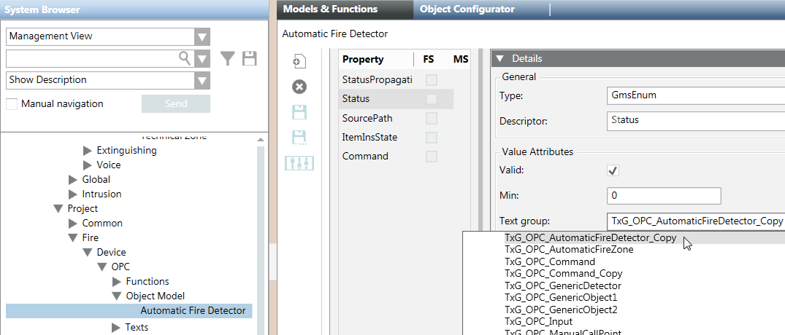

Update the Links Between OPC Fire Customized Objects and Text Groups
Customized objects remain linked to the text groups of the original OPC library. You need to update the customized objects so that they instead link to the customized text groups, which have a different name from the original ones. Proceed as follows:
- Restart the client application, to make the customized text groups available for selection.
- In the customized OPC library tree, under Object Model, select an object (for example, Automatic Fire Detector).
- Click the Models & Functions tab.
- Open the Properties expander.
- Select the Status property.
- Open the Details expander.
- In the Text group drop-down list, select the customized text group to link to the object (for example, TxG_OPC_AutomaticFireDetector_Copy).
- Repeat steps 2 to 7 to link each object to its customized text group.
- To link to the object also the customized Command text group:
a. Select the Command property.
b. Open the Details expander.
c. In the Text group drop-down list, select the customized text group (for example, TxG_OPC_Command_Copy).
